Diseños personalizados
Pasamos tus ideas a formato digital, listas para producir.
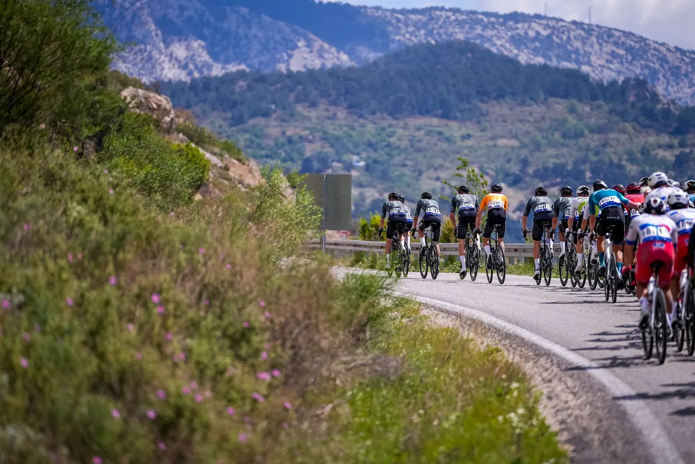
Diseñamos y fabricamos indumentaria deportiva personalizada para equipos, clubes y deportistas. Del primer boceto a la línea de largada, en nuestro propio taller.
Nosotros
Cozy, que en inglés significa confortable, nació en 1983. Hoy somos Cozy Sport: una empresa familiar que diseña y confecciona indumentaria deportiva con valores, pensando cada prenda como única para que quien la use sienta que es especial.

Cómo trabajamos
Tres etapas, un mismo equipo. Te acompañamos en todo el recorrido: desde el primer momento hasta la competencia.
Tus dibujos, imágenes, colores: todo lo que te inspire nos sirve para conocerte y llevar a cabo nuestro mejor trabajo.
Desarrollamos un outfit a partir de lo que nos transmitiste. Antes de que algo se imprima, lo tenés que ver tal como lo soñaste.
Una vez que todo está aprobado, despegamos con todos los departamentos de Cozy para que el producto salga en tiempo y forma. Siempre cuidando los detalles.
Nuestro servicio
Un equipo de diseño, producción y ventas trabajando para que tu indumentaria se vea, se sienta y rinda como esperás.
Pasamos tus ideas a formato digital, listas para producir.
Bocetos a mano alzada, siempre buscando nuevas tendencias.
Llegar a la meta cumpliendo con tus expectativas.
Estamos juntos en este viaje, desde el primer momento hasta la competencia.
Usamos las mejores tintas del mercado para llegar al color que imaginaste.
Disciplinas
Indumentaria y accesorios: todo lo que necesites. Diseñamos prendas a medida para equipos, grupos de entrenamiento, eventos y deportistas.
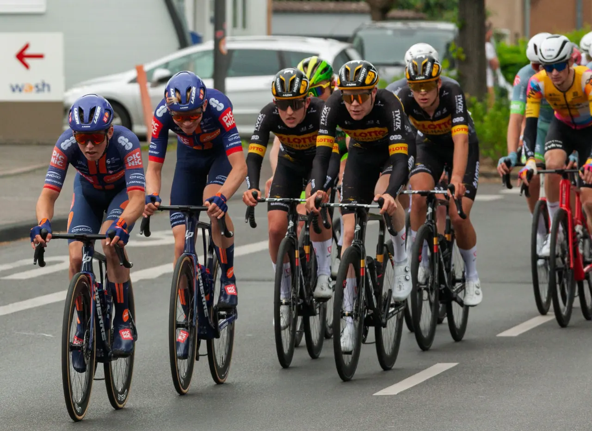
Línea destacadaMaillots, culottes y kits completos para grupos y equipos de ruta o MTB.
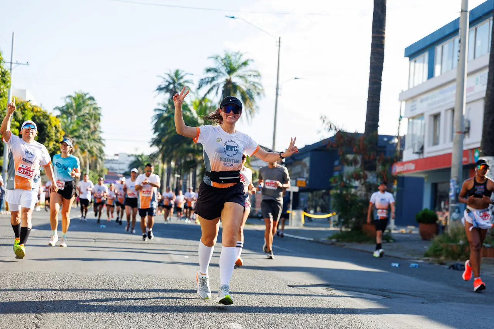
Remeras técnicas y kits para equipos y carreras.
#TeamCozyVestimos a campeones argentinos y mundiales.
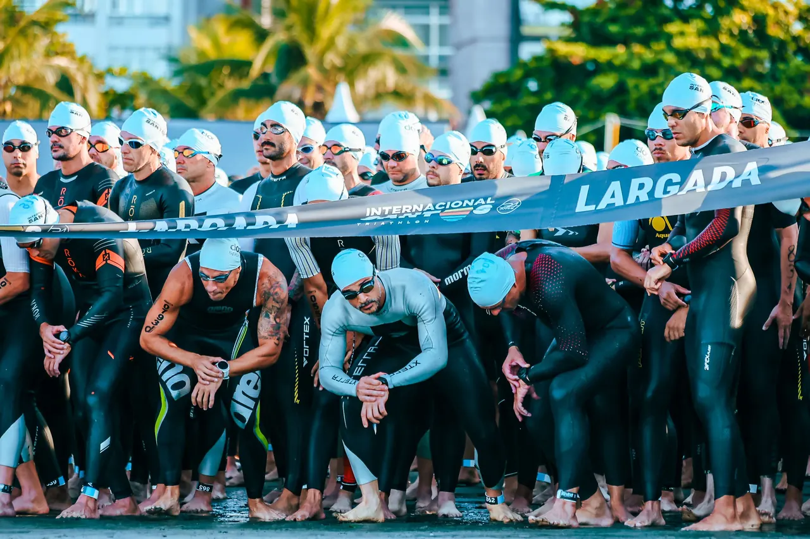
Trajes y prendas para nadar, pedalear y correr.
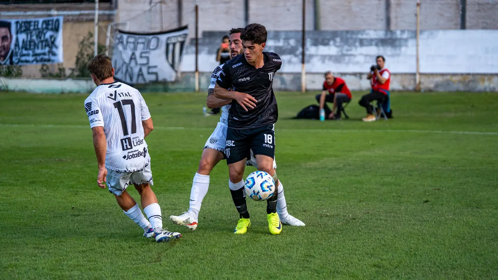
Camisetas, shorts y conjuntos para tu club o equipo de amigos.
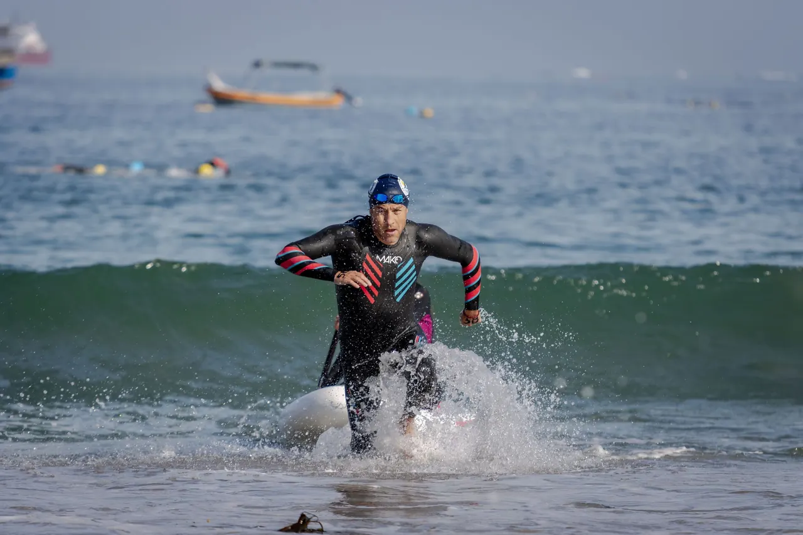
Prendas para entrenar y competir en el agua.
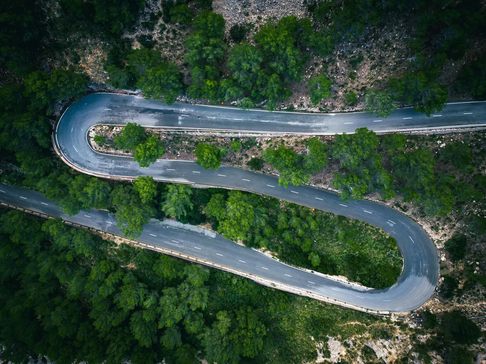
Línea ciclismo
Kits a medida para tu grupo de ruta, tu equipo de MTB o tu evento. Diseñamos con vos cada detalle: colores, logos, sponsors y nombres, para que el pelotón te reconozca desde lejos.
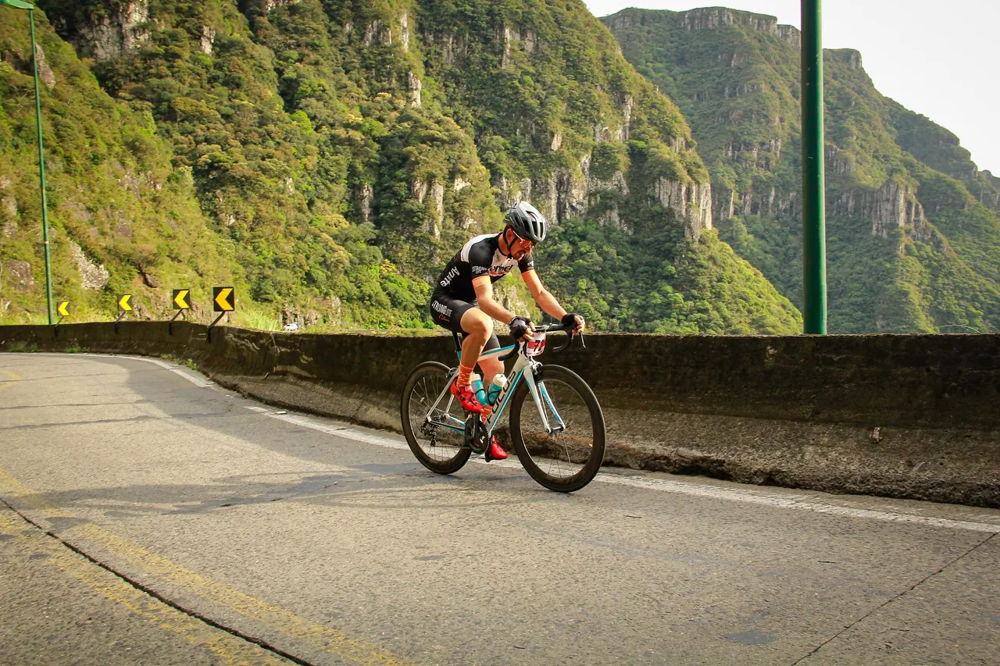
Corte ajustado, bolsillos traseros y diseño a tu medida para salidas largas.
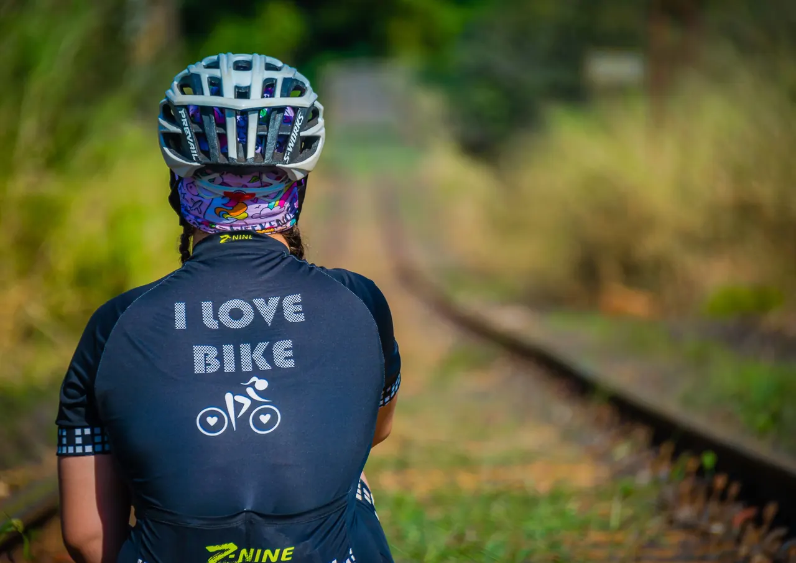
Maillot y culotte con la identidad de tu team, sponsors y nombres.
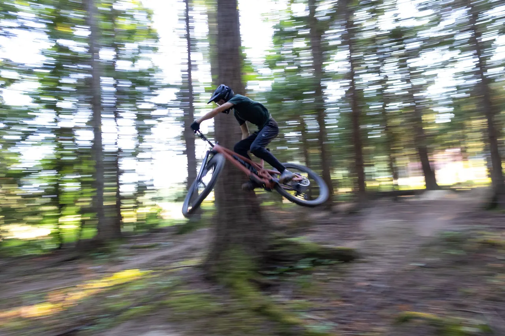
Prendas para el barro, el polvo y los senderos técnicos.
Indumentaria y accesorios
Además de prendas, diseñamos accesorios para acompañarte en cada entrenamiento. Mirá nuestra Mochila Multi Deporte de 50 litros.
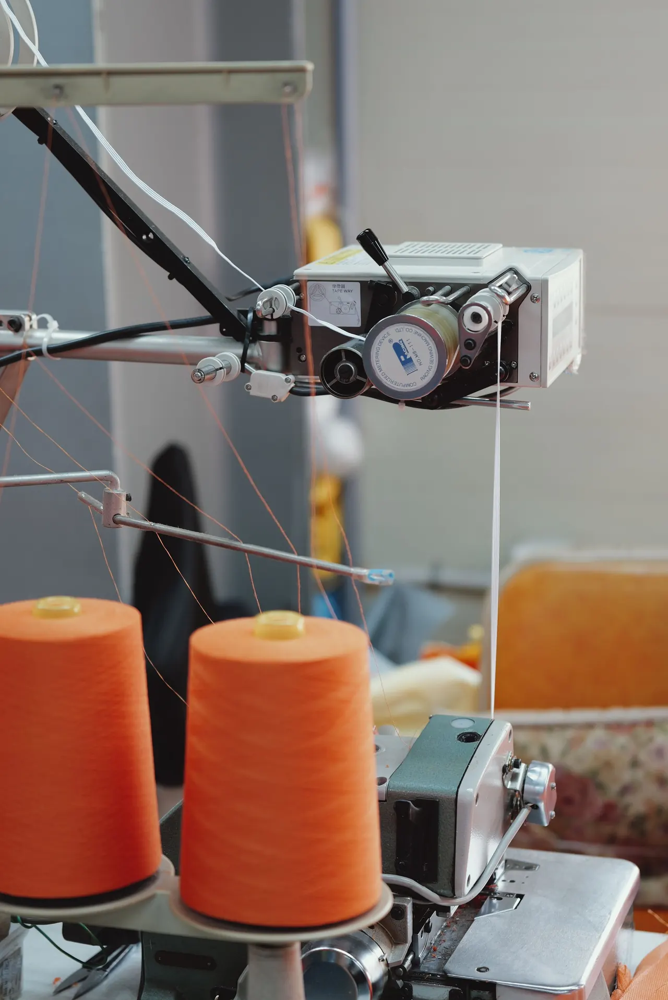
Taller de costura · Beccar
Pasamos de cortar en el piso a tener una mesa de corte; de una máquina de coser a un taller completo. Hoy cada prenda Cozy recorre este camino antes de llegar a tus manos.
Siempre apostando a la industria nacional: a fabricar algo diferente, algo con valores, algo argentino.
Imágenes ilustrativas de Pexels.
El boceto aprobado se convierte en archivo digital: colores, logos, nombres y números ubicados en cada pieza de la moldería, talle por talle.
En la sublimación, el diseño se imprime sobre papel y luego, con calor y presión, la tinta pasa a ser parte de la tela. El resultado: colores intensos que no se cuartean ni se despegan, ideales para prendas deportivas.
Cada pieza se corta con precisión siguiendo la moldería, cuidando que el diseño quede alineado en costuras, mangas y laterales.
Nuestro equipo de producción arma cada prenda en máquinas industriales y se encarga de que tus prendas estén a tiempo.
Revisamos color, costuras, talles y detalles prenda por prenda. Lo que sale de Cozy tiene que estar a la altura de lo que soñaste.
Nuestro utilero controla cada pedido, lo arma y lo embala para que llegue completo y en tiempo y forma.
Nuestra historia
Una historia familiar que empezó con un local de ropa en 1983 y hoy viste a deportistas amateurs y profesionales.
Comienza una etapa especial en la Argentina. Inauguramos nuestro local de venta al público, con prendas exclusivas y talles especiales. Cozy, que en inglés significa confortable, empieza su recorrido.
Con el correr de los años fuimos creciendo hasta consolidarnos como marca.
Los problemas del país y la entrada de prendas importadas nos hicieron una mala jugada, y nos apagamos.
Buscamos la forma de reinventarnos: de ser una marca de moda informal pasamos a la confección y creación de indumentaria deportiva, y a llamarnos “Cozy Sport”.
Pasamos de cortar en el piso a tener una mesa de corte; de tener una máquina de coser a tener un taller.
Somos una empresa familiar e industria nacional. Estamos junto a deportistas amateurs y profesionales: todos son parte de esta familia.
En 1983 comienza una etapa especial en la Argentina y, así, una idea de cambio. Inaugurábamos nuestro local de venta al público, con prendas exclusivas y talles especiales. Cozy, que en inglés significa confortable, comenzaba su recorrido. Con el correr de los años fuimos creciendo y en los 90 nos consolidamos, pero los problemas del país y la entrada de prendas importadas nos hicieron una mala jugada y nos apagamos.
Pasó el tiempo y buscamos una forma de reinventarnos: nos diversificamos y, de ser una marca solo de moda informal, pasamos a la confección y creación de indumentaria deportiva, y a llamarnos “Cozy Sport”. Comenzamos de nuevo. Pasamos de cortar en el piso a tener una mesa de corte, de tener una máquina de coser a tener un taller, siempre apostando a la industria nacional, a fabricar algo diferente, algo con valores, algo argentino.
Somos una empresa familiar, por lo que cada prenda lleva nuestro cariño. No hacemos por hacer: pensamos cada producto como único, para que la persona que lo usa sienta que es especial. Tenemos nombre en inglés pero no somos importados: somos industria nacional, hecho por argentinos para el mundo.
Estamos junto a los deportistas amateurs y a los profesionales; todos son parte de esta familia. ¡Gracias por compartir este crecimiento!
Tenemos nombre en inglés, pero somos industria nacional.
The Team Cozy
Somos un equipo y jugamos como tal. Cada uno en su puesto, todos detrás del mismo objetivo: que tu indumentaria llegue a la cancha como la soñaste.
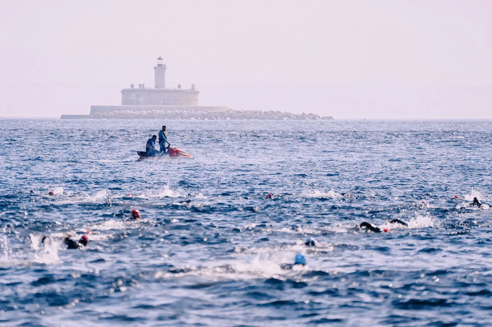
Deportistas #TeamCozy
Estos son los deportistas que nos representan.
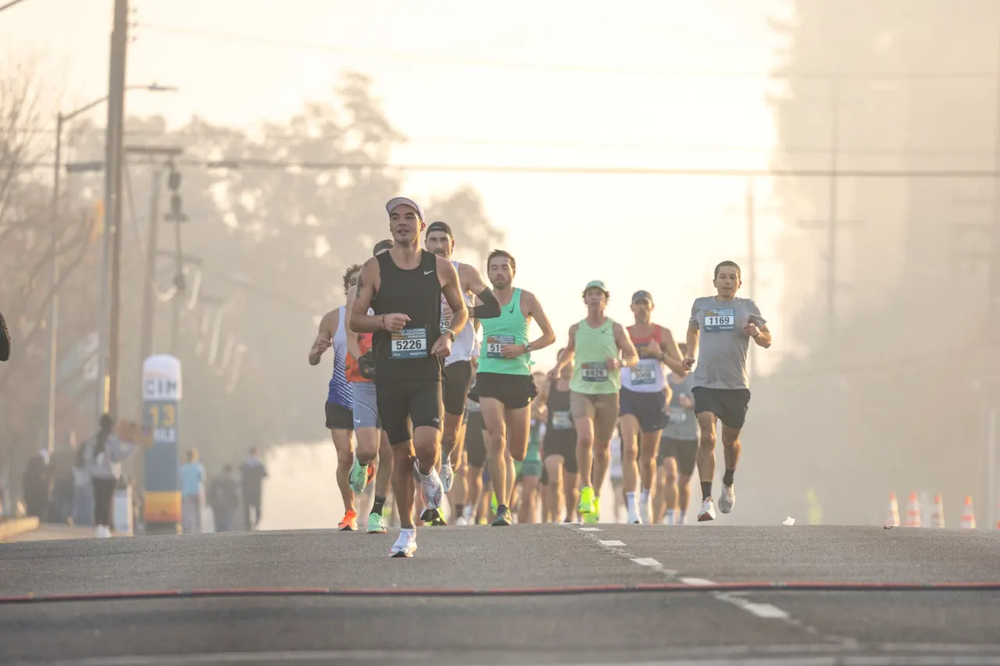
Tienda online
Entrá a nuestra tienda online. Comprá desde tu casa: nosotros te lo llevamos.
Ir a tiendacozy.comPreguntas frecuentes
Lo que más nos consultan antes de encargar indumentaria personalizada.
Hacé tu consultaEscribinos por el formulario, por mail o llamanos. Contanos qué deporte hacés, para cuántas personas es y mandanos todo lo que te inspire: dibujos, imágenes, logos o colores. Con eso arrancamos.
Sí. Desarrollamos el diseño del outfit a partir de lo que nos transmitiste y, antes de imprimir nada, lo tenés que ver tal como lo soñaste. Recién cuando lo aprobás pasamos a producción.
Es una técnica en la que el diseño se imprime en papel y se transfiere a la tela con calor y presión. La tinta queda integrada a la fibra, por eso los colores son intensos, no se cuartean y permiten diseños sin límites de colores ni ubicación.
Ciclismo, running, triatlón, fútbol, footgolf y deportes de agua, entre otros. Si tu disciplina no está en la lista, consultanos: diseñamos a medida.
Depende del tipo de prenda, la cantidad y el momento del año. Escribinos con tu idea y te pasamos plazos y presupuesto para tu pedido.
En nuestra tienda online, tiendacozy.com: comprás desde tu casa y nosotros te lo llevamos.
Contacto
Contanos tu idea y armamos juntos la indumentaria que tu equipo se merece.